Fast Fashion? What's that?
Fast fashion refers to the rapid production of inexpensive, trend-driven clothing. A garment can move from design to reality in a matter of weeks, only to be replaced just as quickly by the next trend.
There are some guidelines for deciding what constitutes fast fashion:
- Ultra-fast production cycles — new collections are released weekly, sometimes daily.
- Trend replication — runway and social media styles are copied almost instantly.
- Low-cost materials and labor — garments are made as cheaply as possible to maximize volume.
- High turnover inventory — styles are designed to be short-lived, encouraging constant consumption.
- Globalized supply chains — production is outsourced to minimize cost and speed up delivery.


Keeping up with trends
Fast fashion didn’t evolve on its own — it was fueled by a mix of technology, culture, and economics. Social media platforms accelerated trend cycles, turning a process that used to last months into trends that emerge and fade within days. With constant online exposure to fashion and trendy outfits, consumers are increasingly pressured to keep up, to constantly wear something new, and to be seen wearing it.


More clothes than ever
We are producing — and discardig — more clothing than ever before. Global textile production has surged over the past decades, and waste has grown alongside it. Today, millions of tons of clothing end up in landfills each year, often after being worn only a handful of times.
The gap between what we make and what we throw away continues to widen, revealing a system built not for longevity, but for constant replacement and accumulation.
What our clothes are made of
Production volume is only part of the story. To understand the true impact of fast fashion, we need to look at what these garments are made of.
Today, the majority of fast fashion clothing relies on synthetic fibres, such as polyester, nylon, and elastane. These materials are cheap, durable, and easy to mass-produce, making them ideal for fast fashion’s rapid cycles.
However, unlike natural fibres, many synthetic fibres are derived from fossil fuels and can take hundreds of years to break down, lingering in the environment long after the garment itself is discarded.
Why fabric matters
What our clothes are made of matters, and different fibres carry different environmental costs across their lifecycle — everything from raw material extraction to manufacturing.
For example, polyester can have a lower impact per kilogram than materials like cotton or acrylic in certain categories, such as water use. But this doesn’t make it sustainable.
Each fabric affects the environment differently: some require vast amounts of water, others rely heavily on fossil fuels, and many involve chemical processing. Moreover, the story doesn’t end once a garment is made — its impact continues every time it is worn and washed.
You can’t wash the problem away
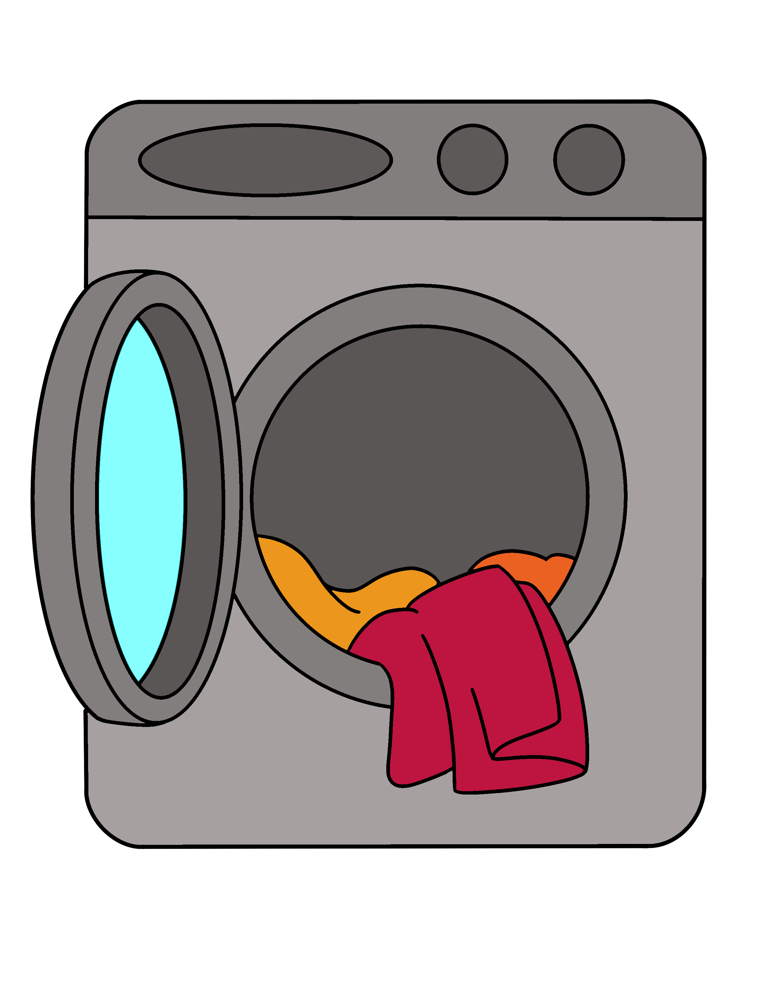
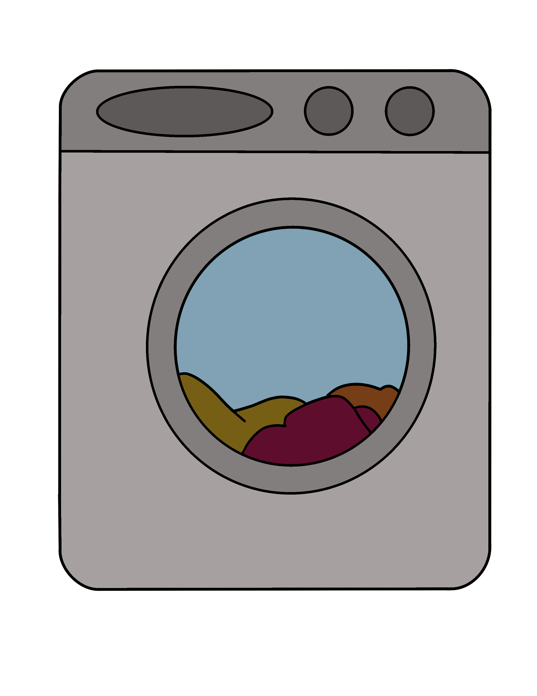
On average, 500,000 tons of microplastics are released into the ocean each year from washing synthetic textiles — the equivalent of 50 million plastic bottles.
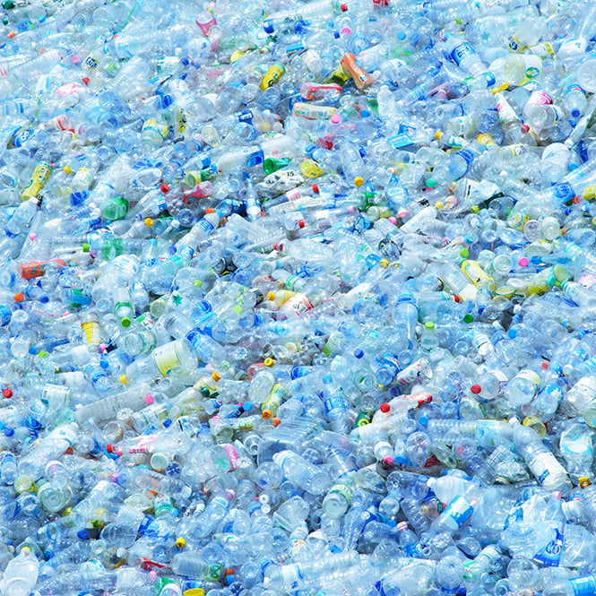
“I already wore that!”
Behind every garment is a chain of resources — raw materials, water, energy, labor, transportation — used to produce something meant to last.
However, in today’s system, that effort is often reduced to just a few wears. The average consumer now buys 60% more clothing than 15 years ago, but keeps each item for only half as long. This shift in consumer behavior is likely due to the low cost of fast fashion, the desire to keep up with trends — especially when posting on social media — and the perception of clothing as disposable.
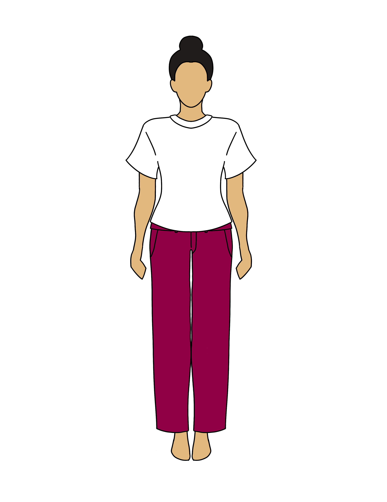
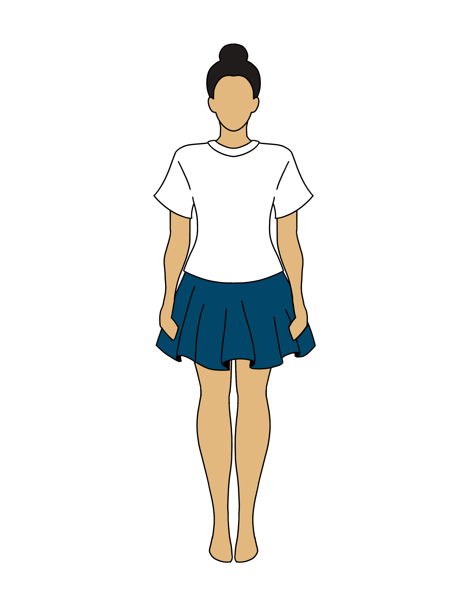
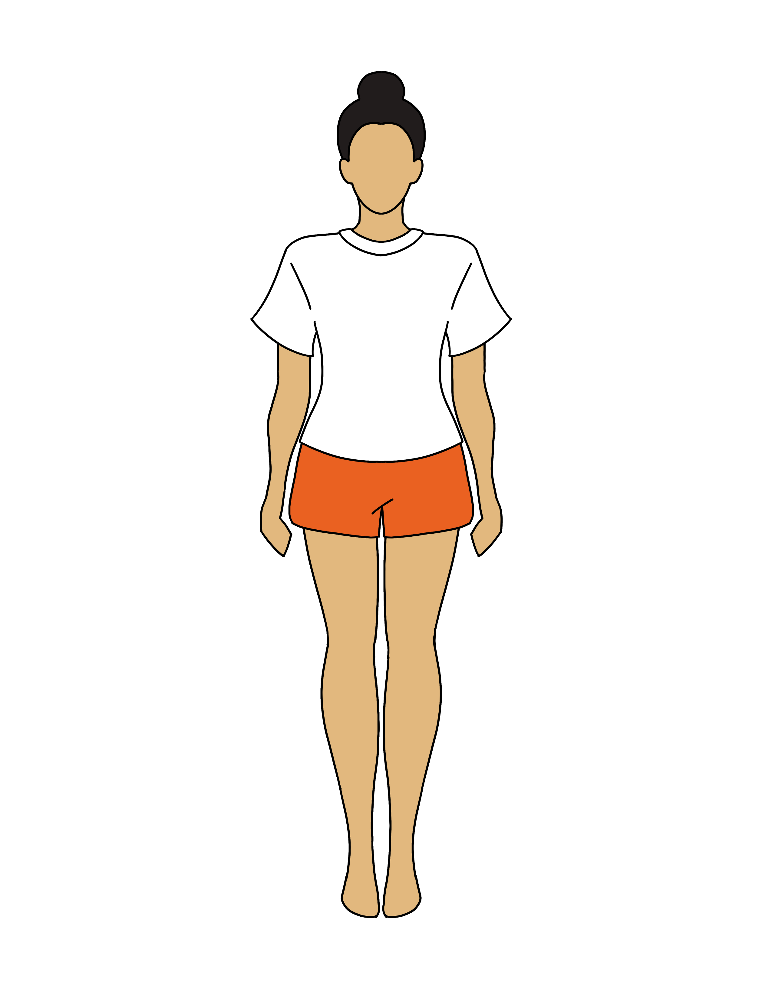
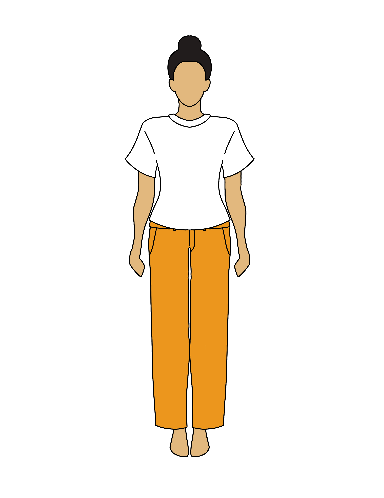
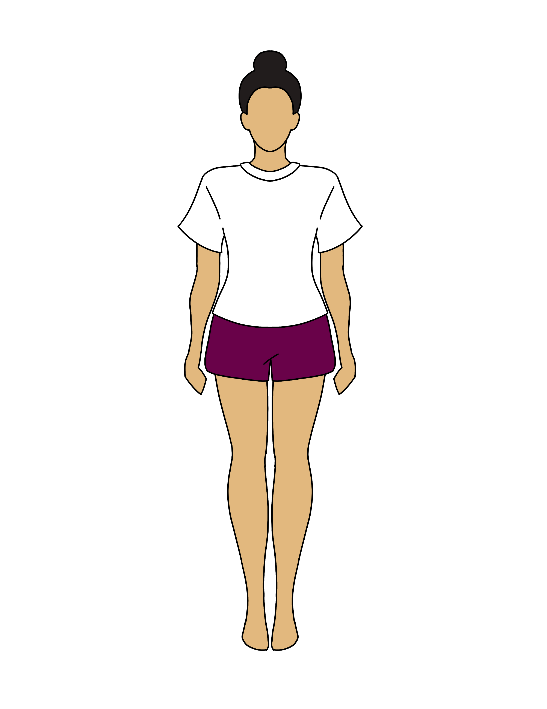
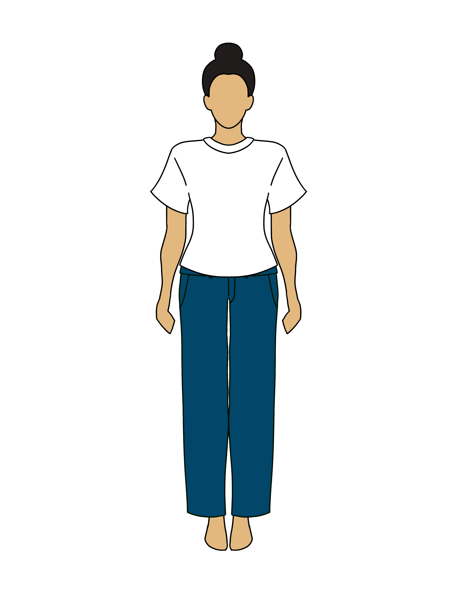
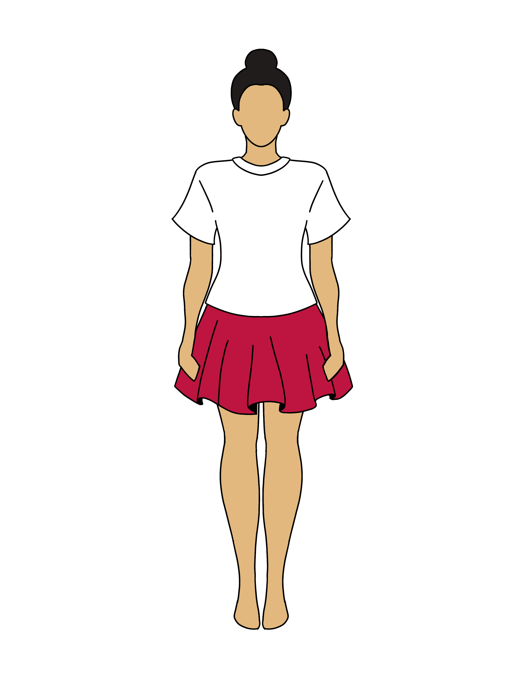
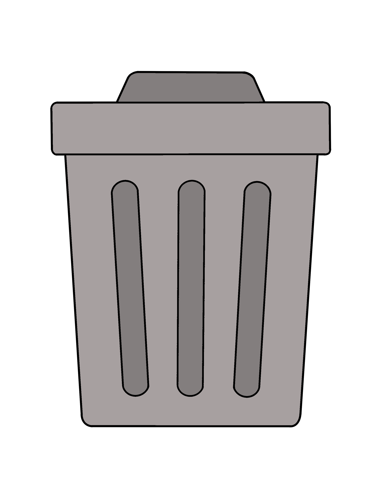
A different way forward
The scale of fast fashion can feel overwhelming, but it is not impossible to address. Change does not have arise from a single, momentous action. Instead, change can arise from small, collective shifts in how we buy, wear, and value our clothes.
Here are a few ways to rethink your relationship with fashion — not by doing everything perfectly, but by doing things a little more intentionally.
- Buy less, choose well. Focus on pieces you genuinely love and will reach for again and again.
- Explore secondhand. Pre-loved clothing gives garments a longer life and a better story.
- Repair when you can. A small fix can transform something disposable into something lasting.
- Wash with care. Washing less and at lower temperatures helps reduce energy use and fibre shedding.
- Support sustinable brands. When possible, choose companies that prioritise transparency and responsible production.
Further reading & resources
- Good On You — brand ethics ratings
- Fashion Revolution — transparency advocacy
- thredUP Resale Report — secondhand market data